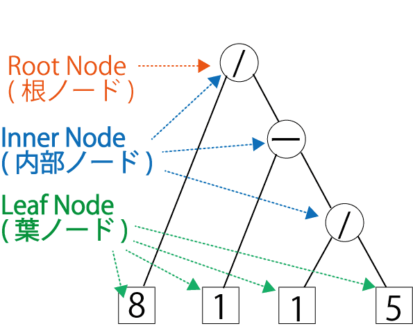
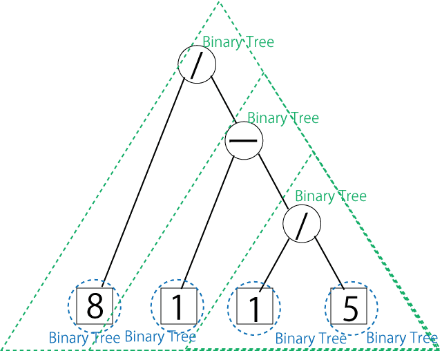

Introduction of Scala Programming Language
Recursive Data Structure and Calculation
Table of Contents
1 What is “Ticket Problem”?
1.1 Overview
- In Japan, 4 digit numbers have been printed in a train ticket.
- Using any of the following basic arithmetic operations and brackets, can
we make a mathematical expression which equals to 10?
- addition \(+\),
- subtraction \(-\),
- multiplication \(\times\),
- division \(\div\)
- If we can, how many such expressions exist?
1.2 Ticket Problem (General Case)
We define Ticket Problem as follows.
- (Input)
- 4 digits sequence – which corresponds to digits
printed in a ticket (“8115” in the above example).
- Note that its ordering is fixed.
- target integer – the number should be the result (10 in the above example).
- 4 digits sequence – which corresponds to digits
printed in a ticket (“8115” in the above example).
- (Output)
- a mathematical expression which equals to the target integer.
- Note that we must have 3 arithmetic operations. For instance, an expression like 81-15 is not permitted.
- a mathematical expression which equals to the target integer.
In the following, for simplicity, we denote the Ticket Problem as a pair like (“8115”, 10) if the context is clear.
- We can consider a variant of this problem which is permitted to change the ordering of the input sequence.
- We distinguish this variant and call it as Variable Ordering Ticket Problem.
2 Approach to solve Ticket Problem using Computer.
2.1 Let’s consider binary tree for Ticket Problem.
How we solve this Ticket Problem?
Hand writing one by one?
- \(((8 + 1) - 1) - 5\) which results in \(3\). Not good!
- (8 + 1) - (1 - 5) which results in \(13\). Not good!
- … iteration and iteration …
Looks hard!
Let’s use a computer.
To use a computer, we need a data structure that represents our
problem.
Then, how we can represent a mathematical expression structured with
brackets?
Here, let’s use Binary Tree.
It looks that it is good to represent our structured expression. In summary, if we can implement the following two procedure, by checking the values of binary trees, we can find a solution of Ticket Problem.
- Enumerate all possible binary trees from the input of Ticket Problem
- Calculate the value of a given binary tree
Indeed, by this way, we can find an answer of the first problem (“8115”,10).
We will see some technical terms of binary tree for the ticket problem. The binary tree for the ticket problem has
- a digit as a leaf node
- an arithmetic operator as a inner node.
The solution (8 / (1 - (1 / 5))) of the example (“8115”,10) can be represented as follows.
|  |
 |
- Inner Node must have 2 children.
- Each those children is called left and right respectively.
- Leaf Node must not have any children.
- Root Node is the node that has no parent.
- A binary tree can contain another binary tree
So far, we see that arithmetic expressions structured by brackets can
be represented by binary trees.
2.2 Ticket Problem Solver Program
The program using binary tree needs the following elements.
- data structure of the binary tree
- enumeration method of binary trees when 4 digit sequence and operator is given.
- calculation method of a given binary tree
With those elements, we can find a solution by evaluating binary trees enumerated.
Next, let's see how to implement it on Scala.
3 Data Structure of the Binary Tree
3.1 Reminder of Class and Object
- Class and Object in Object-oriented languages should be studied in some class (of Java?), so here we remind its basic notion.
- In object oriented programming, we combine a small piece of objects to construct a new object which has new functionality and realize a integrated software in last.
- However, it is inefficient to define similar object separately.
- In Scala, we define a template of object class, and
use it to make an object.
- Common templates can be integrated and organized to abstracted class.
- In the following, we use case class which is one kind of classes which already implements several basic functions in default.
- An instance created from a template (class) becomes individual objects.
3.2 Binary tree construction in Scala
We represent binary trees by using 3 classes.
- abstract class Tree
- class Leaf
- class Node
Abstract class Tree is inherited by Leaf and
Node.
This is implemented by the following Scala program (Ticket0.scala).
abstract class Tree case class Leaf(n: Int) extends Tree case class Node(op: String, left: Tree, right: Tree) extends Tree
- abstract class Tree
- This abstract class has common functions and properties in binary tree. Since this is abstract, it cannot create object.
- case class Leaf
- This class represent a binary tree whose root node is a leaf node.
- Int type n. represents the integer in this leaf node.
- case class Node
- This class represent a binary tree whose root node is a inner node.
- String type op. represents an operator in this inner node.
- Tree type left. represents left binary tree.
- Tree type right. represents right binary tree.
- The following figure shows the relation of the above classes.
Let’s make an object representing a solution of (“8115”,10) (output
of Scala REPL) using Ticket0.scala.
$ ls Ticket0.scala Ticket0.scala $ scala Welcome to Scala 2.12.4 (Java HotSpot(TM) 64-Bit Server VM, Java 1.8.0_121). Type in expressions for evaluation. Or try :help. scala> :load Ticket0.scala Loading Ticket0.scala... defined class Tree defined class Leaf defined class Node scala> val subTree0 = Leaf(1) subTree0: Leaf = Leaf(1) scala> val subTree1 = Node("/", subTree0, Leaf(5)) subTree1: Node = Node(/,Leaf(1),Leaf(5)) scala> val subTree2 = Node("-", Leaf(1), subTree1) subTree2: Node = Node(-,Leaf(1),Node(/,Leaf(1),Leaf(5))) scala> val subTree3 = Node("/", Leaf(8), subTree2) subTree3: Node = Node(/,Leaf(8),Node(-,Leaf(1),Node(/,Leaf(1),Leaf(5))))
Here, we put the defined objects to values subTree0,
subTree1, subTree2, subTree3.
Those values represent object and called object values. (TODO)
The entire part of binary tree is as follows.
Of course, we can directly create the entire part without defining sub trees.
scala> Node("/", Leaf(8), Node("-", Leaf(1), Node("/", Leaf(1), Leaf(5)))) res0: Node = Node(/,Leaf(8),Node(-,Leaf(1),Node(/,Leaf(1),Leaf(5))))
4 Calculate the value of a given binary tree
- So far, we can represent binary tree on Scala.
- Next, we add a function that calculates the value of a given binary tree.
- Specifically, we add a method value that returns Double type.
- By adding method to class, we can use that method from the created object.
4.1 value method ( Tree class)
- Since a method value is a common method for both inner nodes and leaf nodes, we add the signature (description) of this method to abstract class Tree.
abstract class Tree { def value: Double }
- Here, we define a method value which returns Double
type without arguments. However, its specific procedure is
missing.
- (Note) In abstract class, we can write the method without its implementation, that is, we can only write its signature (input / output).
- (Note) If there is a method missing implementation in abstract class Tree, then classes Leaf and Node inheriting this abstract class must provides implementation.
4.2 value method ( Leaf class)
- Implement the method value in the class Leaf.
case class Leaf(n: Int) extends Tree { def value = n.toDouble }
- It is easy to implement the method value in the class Leaf. Only we need to do is translate a member \(n\) (type Int) to type Double．
- Describe implementation after \(=\).
- Note that in this code we omit braces (we can omit it if the implementation is one line). If the implementation of the method is more than one line we need to put braces as follows.
case class Leaf(n: Int) extends Tree { def value = { n.toDouble } }
- If we define method, we can call is as follows.
scala> val subTree0 = Leaf(4) subTree0: Leaf = Leaf(4) scala> subTree0.value res0: Double = 4.0 scala> Leaf(4).value res1: Double = 4.0
- The upper example is that we call value method after creating a value subTree0. The lower example is that we directly call the method value.
4.3 value method ( Node class)
- Implementing the method value in the class Node.
case class Node(op: String, left: Tree, right: Tree) extends Tree { def value = op match { case "+" => left.value + right.value case "-" => ??? case "*" => ??? case "/" => ??? } }
In Node class, we need to realize the calculation of label ( String type) op. And implement it in value method.
In the above example, we use match formula to classify the procedure of operator, and, describe each calculation in the right hand side of =>．
- left and right are Tree type,
that is, Leaf type or Node type.
- If left is Leaf type, then Leaf class’s value method is called.
- If left is Node type, then Node class’s value method is called. And this method is recursively called.
- Similarly right.
- For instance, (1 + (1 + 5)) is calculated as follows.
- Exercise:
- Implement other 3 operation (“-”, “*”, “/”) by filling out above ???.
- We can check its result as follows:
$ ls Ticket1.scala Ticket1.scala $ scala Welcome to Scala 2.12.4 (Java HotSpot(TM) 64-Bit Server VM, Java 1.8.0_121). Type in expressions for evaluation. Or try :help. scala> :load Ticket1.scala Loading Ticket1.scala... defined class Tree defined class Leaf defined class Node scala> Node("/", Leaf(8), Node("-", Leaf(1), Node("/", Leaf(1), Leaf(5)))).value res0: Double = 10.0 scala> Node("-", Node("*", Leaf(7), Leaf(5)), Node("*", Leaf(5), Leaf(5))).value res1: Double = 10.0
4.4 valueEquals method
- To ignore the calculation error, let’s implement a method valueEquals in Tree.
- Since this method is the same for both Leaf class and Node class, we implement it in Tree class.
abstract class Tree { def value: Double def valueEquals(x: Double): Boolean = math.abs(x - value) < 1e-5 }
- Two values of expressions (1 / 3) * (7 / 2) and (7 / 6) + 1 - 1 are not the same (false) when we use ==.
- To ignore this calculation error, use the method valueEquals．
The program Ticket2.scala with valueEquals works as follows.
$ ls Ticket2.scala Ticket2.scala $ scala Welcome to Scala 2.12.4 (Java HotSpot(TM) 64-Bit Server VM, Java 1.8.0_121). Type in expressions for evaluation. Or try :help. scala> :load Ticket2.scala Loading Ticket2.scala... defined class Tree defined class Leaf defined class Node scala> val c1 = Node("*", Node("/", Leaf(1), Leaf(3)), Node("/", Leaf(7), Leaf(2))) c1: Node = Node(*,Node(/,Leaf(1),Leaf(3)),Node(/,Leaf(7),Leaf(2))) scala> val c2 = Node("-", Node("+", Node("/", Leaf(7), Leaf(6)), Leaf(1)), Leaf(1)) c2: Node = Node(-,Node(+,Node(/,Leaf(7),Leaf(6)),Leaf(1)),Leaf(1)) scala> c1.value == c2.value res0: Boolean = false scala> c1.valueEquals(c2.value) res1: Boolean = true
4.5 toString method
- Currently, the output of Tree type is not so intuitive.
- By overriding toString method, it becomes more clear.
- (Note) In case class, toString method is already implicitly implemented, so we need to override it．
- Leaf Class
case class Leaf(n: Int) extends Tree { def value: Double = n.toDouble override def toString = n.toString }
- Node Class
case class Node(op: String, left: Tree, right: Tree) extends Tree { def value = ... override def toString = "(" + left.toString + " " + op + " " + right.toString + ")" }
We should obtain the following result with the program Ticket3.scala
$ ls Ticket3.scala Ticket3.scala $ scala Welcome to Scala 2.12.4 (Java HotSpot(TM) 64-Bit Server VM, Java 1.8.0_121). Type in expressions for evaluation. Or try :help. scala> :load Ticket Ticket.scala Ticket0.scala Ticket1.scala Ticket2.scala Ticket3.scala scala> :load Ticket3.scala Loading Ticket3.scala... defined class Tree defined class Leaf defined class Node scala> Node("/", Leaf(8), Node("-", Leaf(1), Node("/", Leaf(1), Leaf(5)))) res0: Node = (8 / (1 - (1 / 5)))
5 Enumerate all binary tree from 3 digits sequence
- By the implementation so far, we can represent the binary trees and evaluate those binary trees.
- The remaining task is the enumeration of binary trees from a given digit sequence and operators.
- Before considering 4 digit sequence, let’s consider easier case, 3 digit sequence.
5.1 Implementation of genTrees2, genTrees3 method.
- Note that, in the following, the program is assumed to be written in braces of object TestTree in TestTree.scala file.
- The basement program is Ticket4.scala
abstract class Tree { def value: Double def valueEquals(x: Double): Boolean = math.abs(x - value) < 1e-5 } case class Leaf(n: Int) extends Tree { def value: Double = n.toDouble override def toString = n.toString } case class Node(op: String, left: Tree, right: Tree) extends Tree { def value = op match { case "+" => left.value + right.value case "-" => left.value - right.value case "*" => left.value * right.value case "/" => left.value / right.value } override def toString = "(" + left.toString + " " + op + " " + right.toString + ")" } object Ticket { val ops = Seq("+", "-", "*", "/") def genTrees2(x1: Int, x2: Int): Seq[Tree] = ??? def genTrees3(x1: Int, x2: Int, x3: Int) = ??? def genTrees4(x1: Int, x2: Int, x3: Int, x4: Int) = ??? }
- At first, let’s consider a method enumerating all binary tree for a given 2 digits.
def genTrees2(x1: Int, x2: Int): Seq[Tree] = { for { op <- ops } yield Node(op, Leaf(x1), Leaf(x2)) }
- It is easy. We can implement it as the above.
- We an test it as follows:
$ ls Ticket4.scala Ticket4.scala $ scala Welcome to Scala 2.12.4 (Java HotSpot(TM) 64-Bit Server VM, Java 1.8.0_121). Type in expressions for evaluation. Or try :help. scala> :load Ticket4.scala Loading Ticket4.scala... defined class Tree defined class Leaf defined class Node defined object Ticket scala> import Ticket._ import Ticket._ scala> for (tree <- genTrees2(1,2)) println(tree) (1 + 2) (1 - 2) (1 * 2) (1 / 2) scala> genTrees2(1,2).foreach(i => println(i)) (1 + 2) (1 - 2) (1 * 2) (1 / 2) scala> genTrees2(1,2).foreach(println) (1 + 2) (1 - 2) (1 * 2) (1 / 2) scala> genTrees2(1,2).foreach(println(_)) (1 + 2) (1 - 2) (1 * 2) (1 / 2)
- We can see that all binary trees of 1+2, 1-2, 1*2, 1/2 are enumerated.
- Next, let’s consider the enumeration method for a given 3 digits sequence.
- When a digit sequence x1, x2, x3 is given, possible brace
structures are either
- (x1 op x2) op x3 or
- x1 op (x2 op x3)
- Then, the remaining task is to combine both results (trees1 ++ trees2) and return it.
- The implementaion is as follows:
def genTrees3(x1: Int, x2: Int, x3: Int) = { val trees1 = for { op <- ops tree <- genTrees2(x1, x2) } yield Node(op, tree, Leaf(x3.toInt)) val trees2 = for { op <- ops tree <- genTrees2(x2, x3) } yield Node(op, Leaf(x1.toInt), tree) trees1 ++ trees2 }
- We can test it as follows.
$ ls Ticket4.scala Ticket4.scala $ scala Welcome to Scala 2.12.4 (Java HotSpot(TM) 64-Bit Server VM, Java 1.8.0_121). Type in expressions for evaluation. Or try :help. scala> :load Ticket4.scala Loading Ticket4.scala... defined class Tree defined class Leaf defined class Node defined object Ticket scala> import Ticket._ import Ticket._ scala> for (tree <- genTrees3(1,2,3)) println(tree.value + " " + tree) 6.0 ((1 + 2) + 3) 2.0 ((1 - 2) + 3) 5.0 ((1 * 2) + 3) 3.5 ((1 / 2) + 3) 0.0 ((1 + 2) - 3) -4.0 ((1 - 2) - 3) -1.0 ((1 * 2) - 3) -2.5 ((1 / 2) - 3) 9.0 ((1 + 2) * 3) -3.0 ((1 - 2) * 3) 6.0 ((1 * 2) * 3) 1.5 ((1 / 2) * 3) 1.0 ((1 + 2) / 3) -0.3333333333333333 ((1 - 2) / 3) 0.6666666666666666 ((1 * 2) / 3) 0.16666666666666666 ((1 / 2) / 3) 6.0 ((1 + 2) + 3) 2.0 ((1 - 2) + 3) 5.0 ((1 * 2) + 3) 3.5 ((1 / 2) + 3) 0.0 ((1 + 2) - 3) -4.0 ((1 - 2) - 3) -1.0 ((1 * 2) - 3) -2.5 ((1 / 2) - 3) 9.0 ((1 + 2) * 3) -3.0 ((1 - 2) * 3) 6.0 ((1 * 2) * 3) 1.5 ((1 / 2) * 3) 1.0 ((1 + 2) / 3) -0.3333333333333333 ((1 - 2) / 3) 0.6666666666666666 ((1 * 2) / 3) 0.16666666666666666 ((1 / 2) / 3)
6 Play with genTrees3 method.
6.1 Let’s consider “mini” ticket problem whose input is 3 digits sequence (enumerating all solutions).
- For instance, what can be solutions for (“123”,6)?
- We can find all solutions as follows.
- Note that the argument of valueEquals is Double type.
$ ls Ticket4.scala Ticket4.scala $ scala Welcome to Scala 2.12.4 (Java HotSpot(TM) 64-Bit Server VM, Java 1.8.0_121). Type in expressions for evaluation. Or try :help. scala> :load Ticket4.scala Loading Ticket4.scala... defined class Tree defined class Leaf defined class Node defined object Ticket scala> import Ticket._ import Ticket._ scala> for (tree <- genTrees3(1,2,3) if tree.valueEquals(6.0)) println(tree) ((1 + 2) + 3) ((1 * 2) * 3) ((1 + 2) + 3) ((1 * 2) * 3) scala> genTrees3(1,2,3).filter(_.valueEquals(6.0)).foreach(i => println(i)) ((1 + 2) + 3) ((1 * 2) * 3) ((1 + 2) + 3) ((1 * 2) * 3)
- revisit an introduction of List if necessary.
6.2 How about a variable ordering variants?
- At first, how do we obtain all permutation of a given 3 digits?
- Using permutations is the easiest way.
scala> for (i <- Seq(1,2,3).permutations) println(i)
List(1, 2, 3)
List(1, 3, 2)
List(2, 1, 3)
List(2, 3, 1)
List(3, 1, 2)
List(3, 2, 1)
scala> Seq(1,2,3).permutations.toList.foreach(println)
List(1, 2, 3)
List(1, 3, 2)
List(2, 1, 3)
List(2, 3, 1)
List(3, 1, 2)
List(3, 2, 1)
- By using this permutations method, a solver program for 3 digits sequence and variable ordering is as follows.
- Here, we put an intermediate result to the value ``a’’ since it is a bit longer if we put it in one line.
$ ls Ticket4.scala Ticket4.scala $ scala Welcome to Scala 2.12.4 (Java HotSpot(TM) 64-Bit Server VM, Java 1.8.0_121). Type in expressions for evaluation. Or try :help. scala> :load Ticket4.scala Loading Ticket4.scala... defined class Tree defined class Leaf defined class Node defined object Ticket scala> import Ticket._ import Ticket._ scala> val a = (for (xs <- Seq(1,2,3).permutations; tree <- genTrees3(xs(0), xs(1), xs(2)) ) yield tree).toList a: List[Node] = List(((1 + 2) + 3), ((1 - 2) + 3), ((1 * 2) + 3), ((1 / 2) + 3), ((1 + 2) - 3), ((1 - 2) - 3), ((1 * 2) - 3), ((1 / 2) - 3), ((1 + 2) * 3), ((1 - 2) * 3), ((1 * 2) * 3), ((1 / 2) * 3), ((1 + 2) / 3), ((1 - 2) / 3), ((1 * 2) / 3), ((1 / 2) / 3), ((1 + 2) + 3), ((1 - 2) + 3), ((1 * 2) + 3), ((1 / 2) + 3), ((1 + 2) - 3), ((1 - 2) - 3), ((1 * 2) - 3), ((1 / 2) - 3), ((1 + 2) * 3), ((1 - 2) * 3), ((1 * 2) * 3), ((1 / 2) * 3), ((1 + 2) / 3), ((1 - 2) / 3), ((1 * 2) / 3), ((1 / 2) / 3), ((1 + 3) + 2), ((1 - 3) + 2), ((1 * 3) + 2), ((1 / 3) + 2), ((1 + 3) - 2), ((1 - 3) - 2), ((1 * 3) - 2), ((1 / 3) - 2), ((1 + 3) * 2), ((1 - 3) * 2), ((1 * 3) * 2), ((1 / 3) * 2), ((1 + 3) / 2), ((1 - 3) / 2), ((1 * 3) / 2), ((1 / 3) / 2), ((1 + 3) + 2), ((1 - 3) + 2), ... scala> for (i <- a; if i.valueEquals(6.0)) println(i) ((1 + 2) + 3) ((1 * 2) * 3) ((1 + 2) + 3) ((1 * 2) * 3) ((1 + 3) + 2) ((1 * 3) * 2) ((1 + 3) + 2) ((1 * 3) * 2) ((2 + 1) + 3) ((2 * 1) * 3) ((2 / 1) * 3) ((2 + 1) + 3) ((2 * 1) * 3) ((2 / 1) * 3) ((2 + 3) + 1) ((2 * 3) * 1) ((2 * 3) / 1) ((2 + 3) + 1) ((2 * 3) * 1) ((2 * 3) / 1) ((3 + 1) + 2) ((3 * 1) * 2) ((3 / 1) * 2) ((3 + 1) + 2) ((3 * 1) * 2) ((3 / 1) * 2) ((3 + 2) + 1) ((3 * 2) * 1) ((3 * 2) / 1) ((3 + 2) + 1) ((3 * 2) * 1) ((3 * 2) / 1)
- Another way of defining ``a’’ using for comprehension is as follows.
// definition of ``a'' using for comprehension scala> val a = (for { | xs <- Seq(1,2,3).permutations | tree <- genTrees3(xs(0), xs(1), xs(2)) | } yield tree).toList a: List[Node] = List(((1 + 2) + 3), ((1 - 2) + 3), ((1 * 2) + 3), ((1 / 2) + 3), ((1 + 2) - 3), ((1 - 2) - 3), ((1 * 2) - 3), ((1 / 2) - 3), ((1 + 2) * 3), ((1 - 2) * 3), ((1 * 2) * 3), ((1 / 2) * 3), ((1 + 2) / 3), ((1 - 2) / 3), ((1 * 2) / 3), ((1 / 2) / 3), ((1 + 2) + 3), ((1 - 2) + 3), ((1 * 2) + 3), ((1 / 2) + 3), ((1 + 2) - 3), ((1 - 2) - 3), ((1 * 2) - 3), ((1 / 2) - 3), ((1 + 2) * 3), ((1 - 2) * 3), ((1 * 2) * 3), ((1 / 2) * 3), ((1 + 2) / 3), ((1 - 2) / 3), ((1 * 2) / 3), ((1 / 2) / 3), ((1 + 3) + 2), ((1 - 3) + 2), ((1 * 3) + 2), ((1 / 3) + 2), ((1 + 3) - 2), ((1 - 3) - 2), ((1 * 3) - 2), ((1 / 3) - 2), ((1 + 3) * 2), ((1 - 3) * 2), ((1 * 3) * 2), ((1 / 3) * 2), ((1 + 3) / 2), ((1 - 3) / 2), ((1 * 3) / 2), ((1 / 3) / 2), ((1 + 3) + 2), ((1 - 3) + 2), ...
- Next, similar to (fixed ordered) standard 3 digits ticket problem,
- proceed with for and if. Or, proceed it with filter and foreach.
- It may contain many results, so get the number of result by ``count’’ (there is 32 of them).
scala> val b = (for (xs <- Seq(1,2,3).permutations; tree <- genTrees3(xs(0), xs(1), xs(2))) yield tree).toList b: List[Node] = List(((1 + 2) + 3), ((1 - 2) + 3), ((1 * 2) + 3), ((1 / 2) + 3), ((1 + 2) - 3), ((1 - 2) - 3), ((1 * 2) - 3), ((1 / 2) - 3), ((1 + 2) * 3), ((1 - 2) * 3), ((1 * 2) * 3), ((1 / 2) * 3), ((1 + 2) / 3), ((1 - 2) / 3), ((1 * 2) / 3), ((1 / 2) / 3), ((1 + 2) + 3), ((1 - 2) + 3), ((1 * 2) + 3), ((1 / 2) + 3), ((1 + 2) - 3), ((1 - 2) - 3), ((1 * 2) - 3), ((1 / 2) - 3), ((1 + 2) * 3), ((1 - 2) * 3), ((1 * 2) * 3), ((1 / 2) * 3), ((1 + 2) / 3), ((1 - 2) / 3), ((1 * 2) / 3), ((1 / 2) / 3), ((1 + 3) + 2), ((1 - 3) + 2), ((1 * 3) + 2), ((1 / 3) + 2), ((1 + 3) - 2), ((1 - 3) - 2), ((1 * 3) - 2), ((1 / 3) - 2), ((1 + 3) * 2), ((1 - 3) * 2), ((1 * 3) * 2), ((1 / 3) * 2), ((1 + 3) / 2), ((1 - 3) / 2), ((1 * 3) / 2), ((1 / 3) / 2), ((1 + 3) + 2), ((1 - 3) + 2), ... scala> (for (i <- b if i.valueEquals(6.0)) yield i).size res0: Int = 32 scala> b.filter(_.valueEquals(6.0)).size res1: Int = 32
- We can define ``b’’ using for comprehension as follows
scala> val b = (for { | xs <- Seq(1,2,3).permutations | tree <- genTrees3(xs(0), xs(1), xs(2)) | } yield tree).toList b: List[Node] = List(((1 + 2) + 3), ((1 - 2) + 3), ((1 * 2) + 3), ((1 / 2) + 3), ((1 + 2) - 3), ((1 - 2) - 3), ((1 * 2) - 3), ((1 / 2) - 3), ((1 + 2) * 3), ((1 - 2) * 3), ((1 * 2) * 3), ((1 / 2) * 3), ((1 + 2) / 3), ((1 - 2) / 3), ((1 * 2) / 3), ((1 / 2) / 3), ((1 + 2) + 3), ((1 - 2) + 3), ((1 * 2) + 3), ((1 / 2) + 3), ((1 + 2) - 3), ((1 - 2) - 3), ((1 * 2) - 3), ((1 / 2) - 3), ((1 + 2) * 3), ((1 - 2) * 3), ((1 * 2) * 3), ((1 / 2) * 3), ((1 + 2) / 3), ((1 - 2) / 3), ((1 * 2) / 3), ((1 / 2) / 3), ((1 + 3) + 2), ((1 - 3) + 2), ((1 * 3) + 2), ((1 / 3) + 2), ((1 + 3) - 2), ((1 - 3) - 2), ((1 * 3) - 2), ((1 / 3) - 2), ((1 + 3) * 2), ((1 - 3) * 2), ((1 * 3) * 2), ((1 / 3) * 2), ((1 + 3) / 2), ((1 - 3) / 2), ((1 * 3) / 2), ((1 / 3) / 2), ((1 + 3) + 2), ((1 - 3) + 2), ...
7 Subject
7.1 genTrees4 method
- Input 4 digits x1, x2, x3, x4 (Int type)
- Output sequence of all Tree which are obtained from the given 4 digits (fixed ordering). Seq[Tree] Type.
- Implementation use genTrees2 and genTrees3.
- (Verify) It is okay (not comprehensive though) if you can get the following result.
genTrees4(8,1,1,5).size //> res8: Int = 320
7.2 findSolutions method — The program which enumerates all solutions of the ticket problem.
- Input xs: Seq[Int] type, (length is fixed to 4). a: Int type. (that is, input of ticket problem)
- Output sequence of all Tree whose value is equal to ``a’’ obtained from the given 4 digits sequence. Seq[Tree] type.
- Implementation call genTrees4
def findSolutions(xs: Seq[Int], a: Int): Seq[Tree] = { ??? }
- it is easy to use filter and valueEquals. Please refer ``Play with genTrees3’’.
- (Verify) It is okay if you get the following output.
findSolutions(Seq(8,1,1,5), 10) //> res4: Seq[Tree] = List((8 / (1 - (1 / 5)))) findSolutions(Seq(7,5,5,5), 10) //> res5: Seq[Tree] = List(((7 * 5) - (5 * 5)))
- If you get a wrong result, your implementation of genTrees4 may be wrong. Please re-check it.
7.3 Implementing findAll method — enumerating all solution of variable order ticket problem.
- (input) 4 digit sequence ``xs’’: Seq[Int] type. Target value a.
- (output) sequence of all Tree whose value is equal to ``a’’ obtained from the given 4 digits (ordering can be varied). Seq[Tree] type.
- (Condition of Implementation) genTrees4 を呼び出す
- (verify) It is okay if you get the following output.
scala> for (i <- findAll(Seq(8,1,1,5),21)) println(i) ((8 * (1 + 1)) + 5) (((1 + 1) * 8) + 5) (5 + (8 * (1 + 1))) (5 + ((1 + 1) * 8)) scala> findAll(Seq(8,1,1,5),21).foreach(println) ((8 * (1 + 1)) + 5) (((1 + 1) * 8) + 5) (5 + (8 * (1 + 1))) (5 + ((1 + 1) * 8))
8 Challenge Subject
8.1 genTrees method
- (Input) Integer Sequence (variable ordering, any length)．Seq[Int] type.
- (Output) sequence of all Trees obtained from the given integer sequence. Seq[Tree] type.
- (Condition of implementation) use recursive programming. That is, genTrees will call genTrees.
- (hint)
def genTrees(xs: Seq[Int]): Seq[Tree] = { ??? }
- (Verification) It is okay if you can get the following output.
/** * Scala Worksheet (week05.sc) */ genTrees(Seq(1,2,3)).size //> res6: Int = 32 genTrees(Seq(1,2,3,4)).size //> res7: Int = 320 genTrees(Seq(1,2,3,4,5)).size //> res8: Int = 3584 genTrees(Seq(1,2,3,4,5)).filter(_.valueEquals(10.0)).foreach(println) //> (1 + (2 + ((3 * 4) - 5))) //| (1 + ((2 + (3 * 4)) - 5)) //| (1 + ((2 * (3 + 4)) - 5)) //| ((1 + 2) + ((3 * 4) - 5)) //| (((1 + 2) / 3) + (4 + 5)) //| ((((1 + 2) / 3) + 4) + 5) //| ((1 - ((2 - 3) * 4)) + 5) //| ((((1 + 2) * 3) - 4) + 5) //| (1 - (((2 - 3) * 4) - 5)) //| (1 - ((2 - 3) * (4 + 5))) //| (((1 + 2) * 3) - (4 - 5)) //| ((1 + (2 + (3 * 4))) - 5) //| ((1 + (2 * (3 + 4))) - 5) //| (((1 + 2) + (3 * 4)) - 5) //| (1 * (((2 * 3) - 4) * 5)) //| ((1 + (2 + (3 - 4))) * 5) //| ((1 + ((2 + 3) - 4)) * 5) //| (((1 + 2) + (3 - 4)) * 5) //| (((1 + (2 + 3)) - 4) * 5) //| ((((1 + 2) + 3) - 4) * 5) //| (((1 * (2 * 3)) - 4) * 5) //| ((((1 * 2) * 3) - 4) * 5) //| ((1 * ((2 * 3) - 4)) * 5)